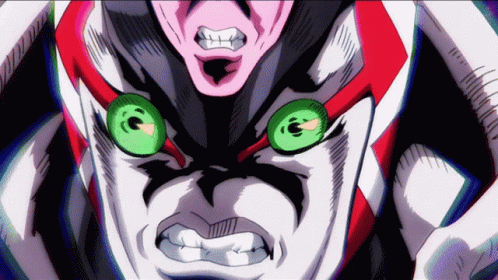

Jojos bizarre Adventure
Golden Experince
Golden Experience plays a crucial role in the manga and anime series JoJo's Bizarre Adventure, particularly in the fifth story arc known as "Vento Aureo" or "Golden Wind." This concept revolves around the Stand ability possessed by the protagonist of this arc, Giorno Giovanna. Through Golden Experience, Giorno gains the power to animate lifeless objects, essentially giving life to non-living entities. This unique ability not only enables him to execute innovative and tactical combat strategies but also reflects his strong desire to safeguard life and instigate positive transformations in the world.The significance of Golden Experience goes beyond its literal capabilities. It symbolizes Giorno's quest for self-realization and personal growth. Being the illegitimate child of the series' primary antagonist, Dio Brando, Giorno faces the challenge of reconciling his lineage while striving to carve his own destiny. Golden Experience embodies his determination to break away from his family background and establish his own principles of justice and morality. Through his interactions with his Stand, Giorno grasps the importance of compassion, bravery, and selflessness, ultimately evolving into a formidable champion of righteousness. Furthermore, Golden Experience serves as a central motif in "Vento Aureo," mirroring the arc's overarching themes of development, renewal, and the cyclical essence of existence. Giorno's ability to infuse vitality into lifeless objects reflects the perpetual cycle of creation and annihilation inherent in nature. This motif reverberates throughout the narrative as characters confront their pasts, embrace their fates, and strive for redemption. Golden Experience encapsulates the core essence of jjba as a series that seamlessly blends supernatural elements with profound philosophical insights, crafting a storyline that is both intellectually stimulating and entertaining.
Dirty deeds done dirt cheap
D4C, also known as Dirty Deeds Done Dirt Cheap, is a Stand that appears in JoJo's Bizarre Adventure: Steel Ball Run, the seventh story arc of the series. This Stand is wielded by the primary antagonist, Funny Valentine, and is highly regarded for its exceptional versatility and formidable abilities. One of D4C's primary abilities is its capacity to traverse between parallel dimensions, allowing Valentine to access numerous alternate realities. This unique power not only enables strategic maneuvers and retreats but also symbolizes Valentine's unyielding ambition and his willingness to manipulate fate itself in order to achieve his goals. What truly distinguishes D4C from other Stands is its ability to interact with multiple versions of itself from alternate dimensions. This grants Valentine an army of duplicates, each possessing the same powers and abilities as the original Stand. This feature not only enhances D4C's combat prowess but also showcases Valentine's cunning and resourcefulness as a villain. Furthermore, D4C's capability to merge individuals from different dimensions raises complex moral dilemmas and philosophical questions about identity, morality, and the very nature of existence.The significance of D4C extends beyond its role as a formidable antagonist Stand; it serves as a catalyst for the exploration of various themes within the narrative. Fate, justice, and the human condition are among the themes that are deeply examined through the abilities and interactions of D4C. As the protagonists are challenged to confront their own beliefs and motivations, profound character development and revelations ensue. The presence of D4C in Steel Ball Run heightens the stakes of the story, driving the tension and intrigue as the protagonists navigate a world where the boundaries between reality and possibility become increasingly blurred.
King Crimson
King Crimson, featured in the fifth story arc of JoJo's Bizarre Adventure known as Vento Aureo or Golden Wind, is undeniably one of the most mysterious and powerful Stands in the series. As the Stand of the main antagonist, Diavolo, King Crimson possesses a primary ability that revolves around manipulating time. Its famous catchphrase, "It just works," perfectly encapsulates its power to erase a segment of time, with only Diavolo retaining his awareness of events during this period. This unique ability grants Diavolo an unparalleled advantage in combat, as he can foresee and nullify any actions taken against him, rendering him invincible within the erased time frame.The mechanics behind King Crimson's time manipulation ability remain shrouded in mystery, leaving both characters and readers perplexed. Its ability to erase time raises profound questions about the concepts of fate, free will, and causality within the universe of "JoJo's Bizarre Adventure." However, despite its seemingly unbeatable nature, King Crimson does have weaknesses. Resourceful characters like Giorno Giovanna and his Stand, Golden Experience Requiem, manage to find ways to counter King Crimson's abilities through their ingenuity and determination. King Crimson's design perfectly matches its role as a formidable antagonist, with its menacing appearance and grotesque facial features. Its presence in "Vento Aureo" adds layers of complexity to the narrative, heightening the tension and stakes as the protagonists confront Diavolo and his formidable Stand. King Crimson stands as a testament to the boundless creativity and imagination of series creator Hirohiko Araki, solidifying its status as one of the most iconic and unforgettable Stands in the "JoJo's Bizarre Adventure" franchise.
helpful links
